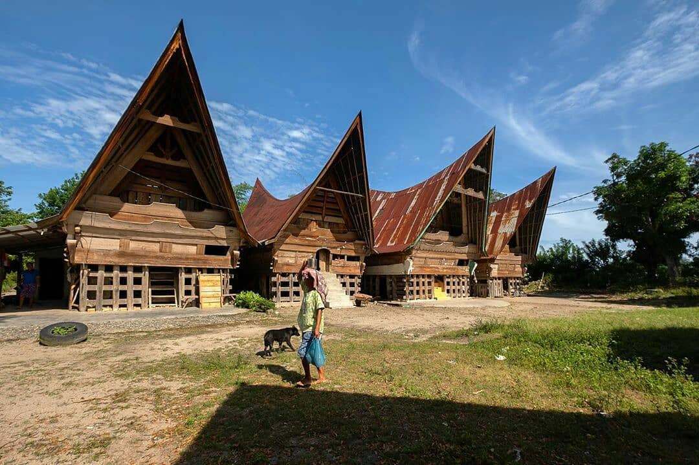

Mengenal Budaya Suku Batak: Tradisi, Kesenian, dan Adat Istiadat

Asal usul
Asal usul suku Batak dipercaya berasal dari kawasan Danau Toba, tepatnya di Pusuk Buhit yang berada di daerah Samosir. Menurut cerita rakyat yang berkembang di masyarakat Batak, nenek moyang mereka adalah Si Raja Batak yang diyakini pertama kali turun di Pusuk Buhit. Dari tempat itulah keturunannya menyebar ke berbagai wilayah di sekitar Danau Toba dan kemudian membentuk kelompok-kelompok Batak yang ada sekarang. Selain berdasarkan cerita rakyat, beberapa sumber sejarah juga menyebut bahwa suku Batak sudah menetap di wilayah Sumatera Utara sejak ratusan tahun yang lalu dan berkembang sebagai salah satu suku terbesar di Indonesia.
Tradisi
Dalam Suku Batak, tidak boleh menikah dengan marga yang sam. Sebagai contoh, Sitomorannya ada tiga. Sitomoran tiga ditambah si Ringo-Ringo, Sitohangnya tujuh. Namanya Sitomoran Sipituwang. Mereka masih satu grup. Kalau satu grup seperti itu, sebaiknya tidak boleh saling nikah. Artinya Sitomoran dengan Sitohang, dengan si Ringo-Ringo enggak boleh saling nikah, Masih sedarah. Sedarah, dari yang nenek moyang.
Ulos juga termasuk tradisi dan juga ada bermacam-macam. Untuk laki-laki dan perempuan beda. Untuk sebagai posisi apa dia beda. Kan sudah menikah. Yang sudah menikah, yang belum menikah memiliki cara pemakaian ulos yang berbeda bedaYa, dan ada juga cara caranya. Jadi mau menikah, mau meninggal, tetap secara adat. Sebenarnya maknanya sebagai lambang kasih sayang, lambang hubungannya. Karena untuk menjadi tulang, ulosnya beda.
Untuk menjadi bere, untuk menjadi, sebagai apapun kita di situ, beda ulosnya. Beda modelnya juga. Dan beda juga masalah harga-harganya. Tapi kalau harga nggak terlalu beda, nggak terlalu masalah, modelnya yang sama, harus sama. Bisa saja beda di bahan, tetapi tetap sama di hiasannya. Untuk motifnya juga masih sama. Untuk ulang, seperti itu.
Kalau untuk yang meninggal, warna yang gelap. Untuk resta, beda. Untuk perempuan yang masih muda, masih gadis, beda warna ulosnya. Untuk laki-laki juga yang masih muda, beda ulosnya. Untuk nikah, berbeda.
Adat Istiadat dalam Pernikahan
Adat yang paling penting adalah saat Menikah, menikah itu menggabungkan dua keluarga besar, dan di situ ada posisi marga namanya suhut, marga dari istri namanya hula-hula, lalu dari paman kita namanya tulang, jadi ada posisi-posisi. Kalau orang yg belum menikah secara adat belum, nanti anak keturunannya gak bisa nikah secara adat juga
Secara adat itu berarti harus mengundang satu marga, satu marga kita, keluarga besar, keluarga besar istri, keluarga besar nenek, jadi dua pihak semuanya. Lalu yang adalah yang harus dibayar, makanya kadang-kadang memang prosesnya agak ribet dan butuh biaya yang mahal, tapi justru itu yang bikin proses penceraiannya juga susah, maka lebih baik tidak bercerai, karena mungkin menikah lagi, susah lagi, yang tadinya misalnya mula mulanya marga Semangunso, tiba-tiba menjadi marga Manurung, itu kan harus membuat acara lagi, jadi malah lebih memperketat, mempererat teguhnya satu pernikahan.
Kesenian
Kesenian suku Batak yang pertama ialah senin bangunan. Dalam seni suku Batak ini, masyarakat memiliki rumah tradisional yang dinamakan ruma atau jabu. Kesenian Sumatera Utara dalam hal bangunan ini memiliki kekhasan paduan seni pahat ular dengan kerajinan. Bentuk rumah adalah panggung yang memiliki tiang berupa kayu bulat. Di tiap sudut, terdapat tiang dengan pondasinya dari batu. Tiang terbesar dinamakan tiang parsuhi dan batu pondasinya disebut batu parsuhi. Tanduk kerbau dipasang di atap barat dan timur yang menjadi lambang pengharapan. Bagian badan rumah terbuat dari papan tebal dan dinding muka belakang dipenuhi ukiran cicak.
Suku Batak memiliki aneka rupa kerajinan. Kerajinan yang cukup tenar adalah kain ulos. Kain ini memiliki beragam jenis dilihat dari fungsinya, yaitu:
1.Ulos lobu-lobu, yakni ulos ayah untuk putra dan menantu saat pernikahan mereka
2.Ulos hela, yaitu ulos pemberian dari orang tua pengantin perempuan
3.Ulos tondi adalah ulos pemberian orang tua pada putrinya saat hamil tua
4.Ulos tujung yaitu ulos untuk janda atau duda
5.Ulos saput yaitu ulos penutup jenazah dari paman almarhum jika yang meninggal laki-laki

Suku Betawi
Suku Betawi adalah kelompok etnis Austronesia yang merupakan penduduk asli kota Jakarta dan sekitarnya.
Baca Selengkapnya
Suku Cina Benteng
Masyarakat Cina Benteng adalah keturunan orang Tionghoa yang sudah tinggal di Tangerang sejak sekitar tahun 1407.
Baca Selengkapnya
Suku Batak
Suku Batak merupakan salah satu suku terbesar di Indonesia dan masuk ke dalam urutan ketiga setelah Suku Jawa dan Suku Sunda.
Baca Selengkapnya